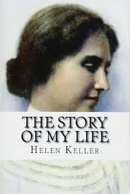
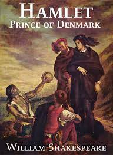
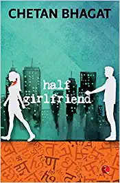
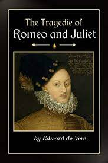
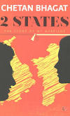

BOOK GALLERY
STORY OF MY LIFE
Helen Keller

Helen Adams Keller was an American author, disability rights advocate, political activist and lecturer. Born in West Tuscumbia, Alabama, she lost her sight and her hearing after a bout of illness at the age of 19 months.
PRIDE AND PREJUDICE
Jane Austen

Pride and Prejudice is an 1813 novel of manners by Jane Austen. The novel follows the character development of Elizabeth Bennet, the dynamic protagonist of the book who learns about the repercussions of hasty judgments and comes to appreciate the difference between superficial goodness and actual goodness.
AS YOU LIKE IT
William Shakespeare

As You Like It is a pastoral comedy by William Shakespeare believed to have been written in 1599 and first published in the First Folio in 1623. The play's first performance is uncertain, though a performance at Wilton House in 1603 has been suggested as a possibility.
As You secution in her uncle's court, accompanied.
HAMLET
William Shakespeare

The Tragedy of Hamlet, Prince of Denmark, often shortened to Hamlet (/ˈhæmlɪt/), is a tragedy written by William Shakespeare sometime between 1599 and 1601. It is Shakespeare's longest play, with 29,551 words. Set in Denmark, the play depicts Prince Hamlet and his revenge against his uncle, Claudius, who has murdered Hamlet's father in order to seize his throne and marry Hamlet's mother
HALF GIRLFRIEND
Chetan Bhagat

Half Girlfriend is a story of Bihari boy Madhav, a Hindi speaking Bihari who falls in love with Riya, an influential Delhi girl on the campus of prestigious St. Stephen’s College. Madhav belongs to middle class family, while Riya is from higher class and both have different lifestyles. Madhav proposes her
ROMEO AND JULIET
William Shakespeare

Romeo and Juliet is a tragedy written by William Shakespeare early in his career about two young Italian star-crossed lovers whose deaths ultimately reconcile their feuding families. It was among Shakespeare's most popular plays during his lifetime and, along with Hamlet, is one of his most frequently performed plays.
2 STATES
Chetan Bhagat

2 States: The Story of My Marriage[1] commonly known as 2 States[2] is a 2009 novel written by Chetan Bhagat.[3] It is the story about a couple coming from two states in India, who face hardships in convincing their parents to approve of their marriage. Bhagat wrote this novel after quitting his job as an investment banker.
INDULEKHA
Chandu Menon

Indulekha is a Malayalam novel written by O. Chandu Menon. Published in 1889, it was the first major novel in the Malayalam language. It was a landmark in the history of Malayalam literature and initiated the novel as a new flourishing genre.[1] The novel is about a beautiful, well-educated lady of a Nair tharavad.